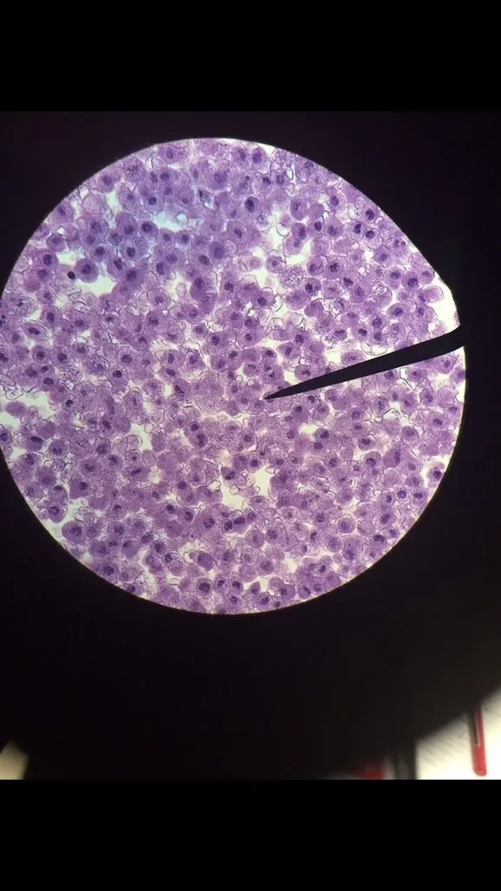

其他无脊椎动物 · 动物界
恶性疟原虫 Plasmodium falciparum

由按蚊传播、致病力最强的疟原虫，专门感染红细胞并可引起脑型疟等重症，是全球疟疾死亡的主要元凶。
- 分类
- 门顶复动物门纲孢子纲目真球虫目科疟原虫科属疟原虫属
- 栖息环境
- 人体肝细胞与红细胞内，有性阶段在雌性按蚊的胃内完成
- 地理分布
- 全球热带与亚热带，非洲撒哈拉以南最严重，中国云南边境有输入病例
- 保护级别
- 暂无评估
物种志
恶性疟原虫的生活史分为肝期和红内期。雌按蚊叮咬时，子孢子随唾液进入人体，先侵入肝细胞发育成裂殖体；随后裂殖子进入红细胞，形成环状体、滋养体和裂殖体，每36–48小时裂体增殖一次，撑破红细胞放出裂殖子，引起寒战、高热和出汗的周期性发作。
部分裂殖子在红细胞内发育成配子体，被按蚊吸入后完成有性繁殖。恶性疟原虫与其他疟原虫不同的是，它能感染各阶段的红细胞，造成极高的原虫血症；感染的红细胞还会黏附在微血管壁上，阻塞血流，因此可引起脑型疟、急性肾衰竭和肺水肿，是疟疾致死的主要原因。它由雌性按蚊传播，输血和母婴传播罕见。预防包括使用药浸蚊帐、驱蚊剂、穿长袖衣物、清除积水，赴疫区前服用预防药物；出现发热应及时就医，治疗以青蒿素联合疗法为主。
形态与习性
- 传播媒介雌性按蚊，叮咬时注入子孢子
- 红内期每36–48小时裂体增殖一次
- 症状周期性寒战、高热、出汗、贫血、脾大
- 重症脑型疟、急性肾衰竭、肺水肿
- 防护药浸蚊帐、驱蚊剂、清除积水、预防用药
- 治疗青蒿素联合疗法
- 全球负担疟疾每年致数十万人死亡，多为非洲儿童
趣味知识
- 恶性疟原虫每36–48小时撑破一批红细胞。
- 它能感染各阶段的红细胞，所以病情特别凶险。
- 脑型疟是恶性疟最致命的并发症。
生态关系
- 寄生 → 中华按蚊 按蚊传播疟疾